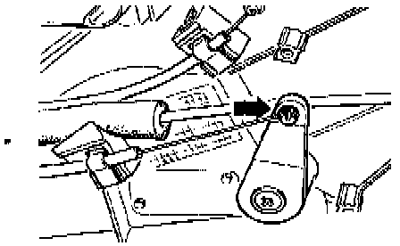
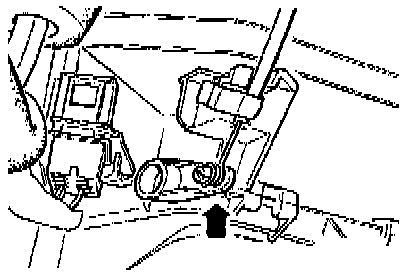
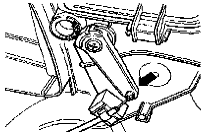

With Air Conditioning
Cable Identification:

NOTES:
- Install cable ends identified with colored bands to control head levers.
- Install cables to control head before installing on evaporator/heater box levers.
- After connecting control cables to control head levers, fasten cables to control head using clips.
- Adjust cables with control head installed.
- When control knobs are turned stop to stop, flaps must move and audibly contact stops.
1 - Temperature Flap Cable
- Connects temperature control knob to temperature flap
- Blue sleeve, 585 mm (23.0 in.) long
- Adjusting see below.
2 - Footwell/Defroster Flap Cable
- Connects air flow distribution knob (upper control lever) to footwell/defroster flap
- Black sleeve, 488 mm (19.2 in.) long
- Adjusting see below.
3 - Central Flap Cable
- Connects air flow distribution knob (lower control lever) to central flap
- Black sleeve, 639 mm (25.2 in.) long
- Adjusting see below.
Temperature Flap Cable, Adjusting:

- Install A/C control head in instrument panel.
- Adjust temperature control knob to full cold.
- Connect temperature flap cable (blue sleeve) to temperature flap lever.
- Push lever in direction of arrow to stop.
- Hold lever in this position and install cable retaining clip.
Footwell/Defroster Flap Cable, Adjusting:

- Install A/C control head in instrument panel.
- Adjust air flow distribution knob to defrost position.
- Connect footwell/defroster flap cable (black sleeve) to foot-well/defroster flap lever.
- Push lever in direction of arrow to stop.
- Hold lever in this position and install cable retaining clip.
Central Flap Cable, Adjusting:

- Install A/C control head in instrument panel.
- Adjust air flow distribution knob to defrost position.
- Connect central flap cable (black sleeve) to central flap lever.
- Push lever in direction of arrow to stop.
- Hold lever in this position and install cable retaining clip.